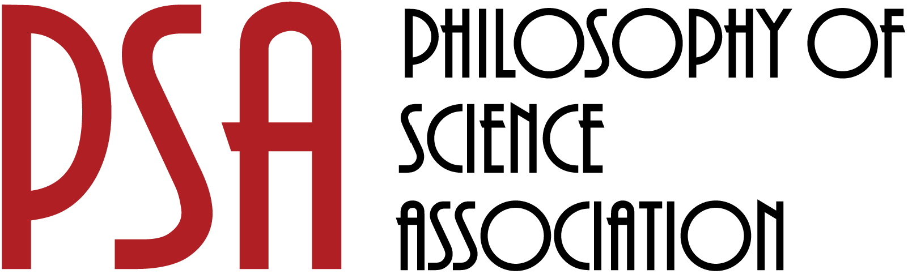

Homepage | Ryan O’Loughlin | Philosopher of Science

Recent Highlights
Talk
“Uncertainty and Climate Models,” Brown Climate Science Seminar (Sept 2025)
Publication
“Moving beyond post hoc eXplainable Artificial Intelligence (XAI),” GMD (2025)
Appointment
I’m appointed as CUNY Grad Center Doctoral Faculty.
What I Work On
All models are wrong—so why trust them? Too often we equate trustworthiness with truthfulness. Yet when models agree, they build confidence for action; when they disagree, they often teach us the most. Uncertainty and error aren’t failures—they’re how science moves forward. My work shows how we can trust science not just by mitigating its limits, but by embracing them.
Big Questions
- How can flawed models generate knowledge?
- When and why do agreement and disagreement strengthen trust in science?
- How should we make decisions under uncertainty?
Bridge to Science
- Diagnosing errors to learn from failure rather than hide it
- Clarifying model evaluation so that convergence and divergence both build insight
- Translating uncertainty into action
Who’s This For?
My work speaks to philosophers (robustness, error, fruitfulness), scientists (model evaluation, uncertainty, pursuitworthiness), and the media (clear, plain-language analysis of climate modeling). And for students, it provides resources, mentorship, and guidance to think critically about science in a complex world.
üìö Philosophers
Works-in-progress & workshops
Start here →
⚗️ Scientists
Talks & collaboration ideas in plain language
Start here →
üéôÔ∏è Media
Bio, topics, headshot, contact
Start here →
üßë‚Äçüéì Students
Syllabi, office hours, course resources
Start here →
Contact Information
ryan.oloughlin@qc.cuny.edu
718-997-5270
Powdermaker Hall 350-V, Queens College, CUNY
Updated: September 9, 2025